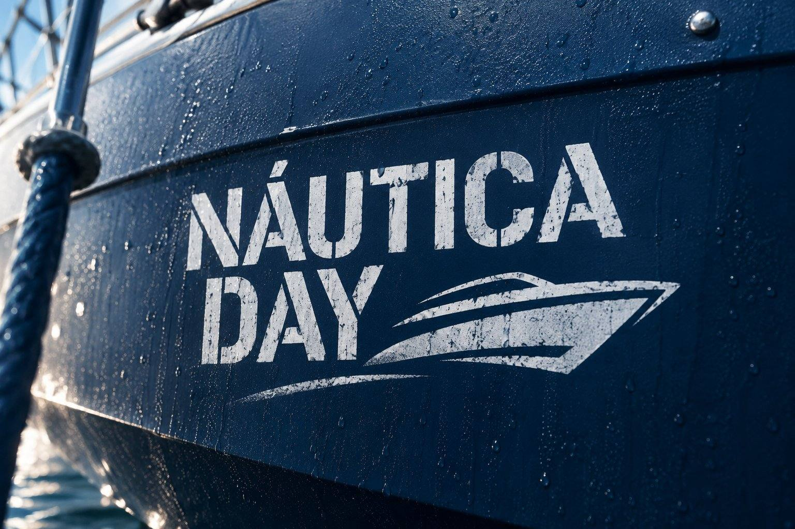

3 rotas de key visual
Use as setas ou clique no KV para abrir a defesa e as peças.Deslize e toque no KV para abrir a defesa e as peças.
Vocabulário comum às três rotas
Os key visuals não dependem só da foto. Uma camada de sinais do mundo da navegação dá ao Náutica Day um repertório próprio, que reaparece no cordão, na credencial, no kit e na cenografia.
As coordenadas marcam o ponto do evento no mapa, como num diário de bordo. Funcionam como um endereço náutico: dão precisão, criam mistério e convidam a pessoa a “navegar até lá”. Nas peças, viram texto nas bordas e no cordão.
Usamos o Código Internacional de Sinais, a linguagem que barcos usam para se comunicar à distância. Em sequência, as bandeiras soletram YAMAHA DAY: uma mensagem escondida que quem conhece decifra, e quem não conhece lê como uma faixa de cor viva.
As curvas de nível e as linhas de profundidade vêm das cartas náuticas, o mapa de quem navega. Aparecem como textura sutil sobre o mar e no verso da credencial, desenhando o território do evento sem competir com o título.
Os círculos de rosa dos ventos e de radar dão direção e movimento: apontam o rumo, organizam a composição e reforçam a ideia de destino. No KV da Largada viram a grade de fundo; nas peças, um selo de navegação.
Sobre o lettering
O stencil é a letra do mundo náutico: nome de embarcação, número de casco, caixa de carga, equipamento de bordo. Pintado no casco, o título parece ter nascido ali. Com desgaste, gotas e sol, a marca continua legível e ganha verdade.

Stap Feelings · Direção de arte: Kco Oyakawa · Peças apresentadas como mockups de conceito.